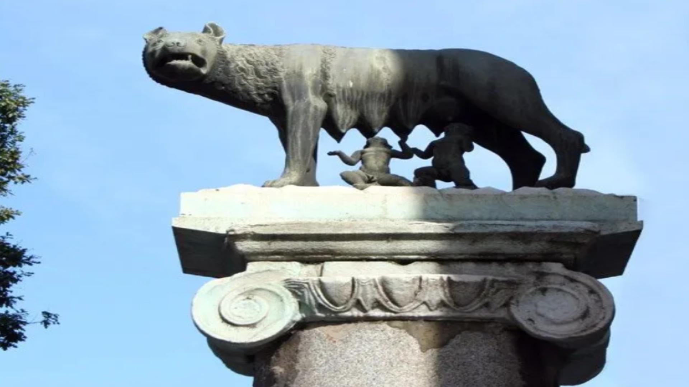
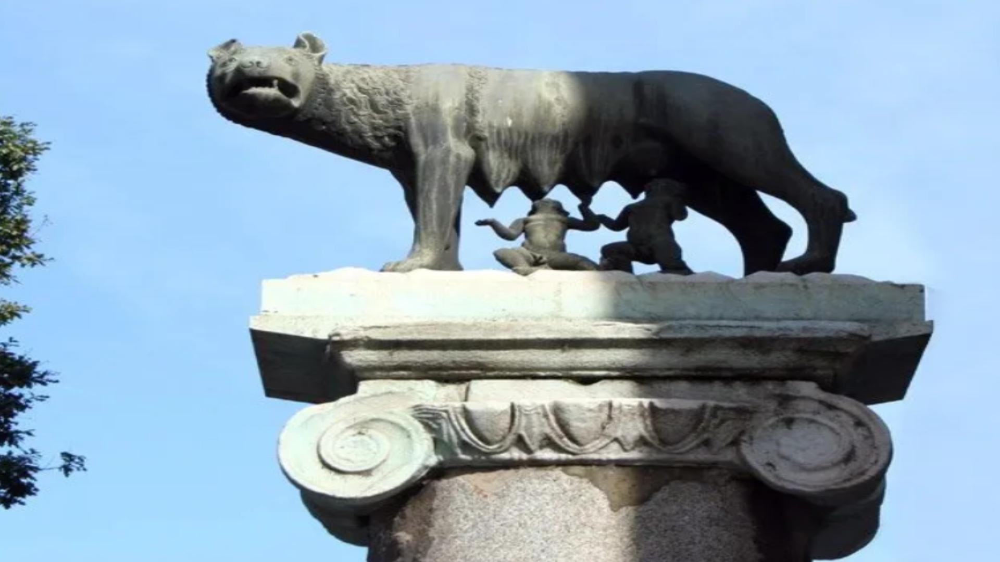
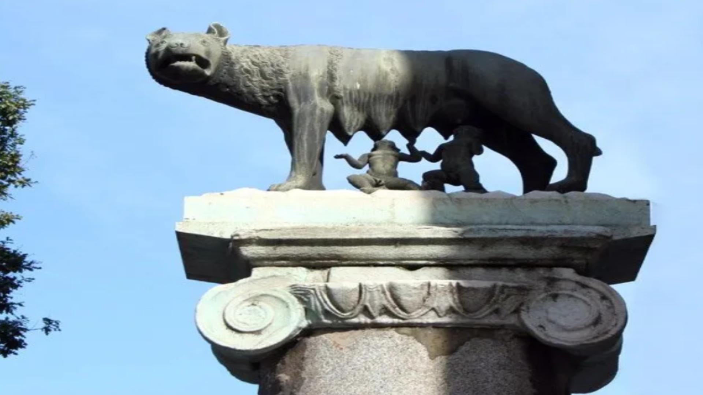
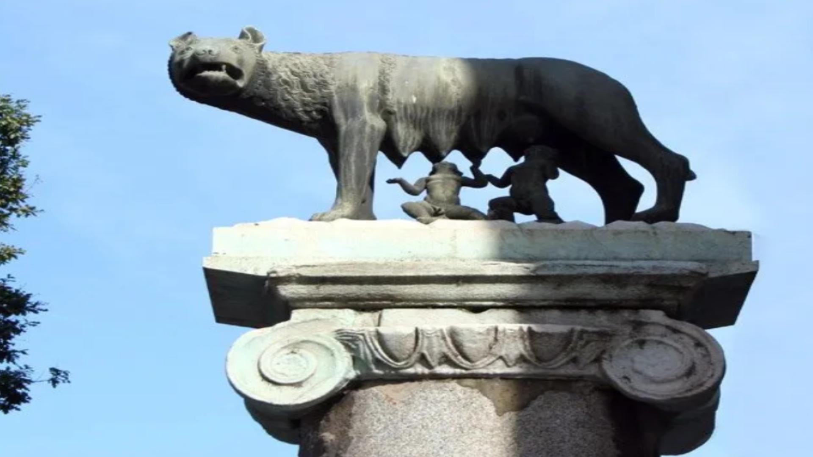

| Episodio | Descripción |
|---|---|
| Episodio Uno La Primera Guerra Bárbara |
Es el año 113 A.C, Roma es una República, un pequeño imperio que se extiende al borde del Mediterráneo. Aunque es una democracia en nombre y espíritu, un hombre debe ser rico y de la clase noble para poder aspirar al poder. El sistema ha funcionado bien por tres siglos; pero la horda bárbara conocida como los Cimbrios amenaza el borde norteño del Imperio. Luego de la muerte de miles de legionarios romanos, el terror se apodera de la República y la sociedad vuelve su mirada al General Mariius, quien a pesar de no ser noble, es un brillante estratega militar. Para lograr su victoria ante los Bárbaros Marius amasará una cantida de poder políticosin antecedentes en la historia de Roma; forzando a la República a decidir entre dictadura y exterminio. |
| Episodio Dos Espartaco | Cuando los generales Pompeyo y Crasolideraron las valientes legiones romanas y mercenarios en los territorios que bordeaban Italia, ninguno de los dos podría imaginarse el revuelo que causaría un mercenario; Espartaco. Un guerrero Tracio, Espartaco desertó del ejército romano, pero fue capturado, hecho esclavo y forzado a pelear como gladiador. Pero en el año 73 a.C, el indomable bárbaro lideró una revuelta de más de 70.000 gladiadores contra la república Romana. La pelea entre Craso y Pompeyo no es solo para controlar a los rebeldes, sino también por llevarse el crédito. |
| Episodio Tres Julio Caesar | Es el año 60 A.C. El panorama que se vivía en la República de Roma era de generales y comandantes con exceso de poder junto a altos niveles de corrupción que nublaban la patria como nunca antes se había visto. Muertes, descontentos y diferencias se desprendian por las calles a toda hora. Julio Cesar, desesperado siempre, por alcanzar más fama y honor, trata de alimentar su propia reputación. Sus rivales aristocráticos tratan de ir en contra de él, pero Julio Cesar es un excelente orador con altos poderes de manipular y persuadir a sus oyentes. Estas y otras razones detonaron la chispa que derribó este gran imperio. |
| Episodio Cuatro El Bosque de la Muerte | Mientras el Imperio Romano se expande en lo que ahora es Alemania, sus legiones se enfrentan a las feroces tribus germánicas. En el siglo 9 D:C, su caudillo Arminius, criado en Roma como prisionero de paz, usa su entrenamiento militar romano para aniquilar al ejército romano del General Varu, en el bosque de Teutoburg. Esta histórica batalla, establece el río Rhin como frontera entre el imperio y sus crecidos enemigos bárbaros. Seis años después el General Germanicus, cruza a través del Rhin en venganza, encuentra montones de huesos y muchos cráneos clavados a los árboles. Un recordatorio de la victoria bárbara. Pero en la batalla del Río Weser, se enfrenta a Arminius y gana. Germanicus, captura a su esposa embarazada, Thusnelda y la hace desfilar por Roma, como símbolo de su victoria. |
| Episodio Cinco La Invasión de Britania | Es el año 47 D.C, Claudio, el nuevo emperador, es considerado por muchos como un campesino idiota. Él solo podría aferrarse al trono llevando a cabo una conquista espectacular. Él escoge Bretaña, una legendaria tierra que fascina e inspira temor en los romanos. Orgullosos y aguerridos, los bretones usan el terreno traicionero de la isla y su bosque oscuro para guiar a las legiones a la ruina. Guiados por la magia de los sacerdotes Druidas y un carismatico guerrero llamado caratacus, los bretones resisten a la maquina de guerra más perfecta que el mundo conoció. |
| Episodio Seis Las Guerras Dacias | A pesar del éxito del Imperio, las extensas campañas militares comienzan a tocar las finanzas del romanas. Cuando las tribus Dacias, saquean tierras romanas, el impopular Emperador Domiciano, es forzado a elevar los impuestos. Él nunca había estado en el frente de batallla, pero uno de sus generales, un hombre joven llamado Trajano, pronto probó ser un digno líder mientras combatía germánicos en el Rhin. Despues del asesinato de Domiciano, Trajano es proclamado emperador y llamano a reconstruir el problemático imperio. Él resolvió los problemas económicosatacando al caudillo Daciano Deceblas. Descubriendo sus tesoros de oro, escondidos en un río. En el 106 D.C. Deceblas huye, pero los hombres de Trajano le dan cacería, pero solo para encontrar que él ya se había quitado la vida, para evitar la humillación. La victoria de Trajano es inmortalizada con una columna en Roma y durante su reinado, el imperio alcanzó su máximo poder. |
| Episodio Siete Rebelión y Traición | En el 162 D.C. Marco Aurelio hereda un imperio en su pico. La paz y prosperidad han reinado por un centenar de años y las fronteras imperiales van desde el mar irlandés hasta las arenas de Siria. Pero mientras más grande es Roma, se convierte en un blanco más fácil. La guerra estalla en dos frentes el este y norte, mientras una plaga aniquila a los romanos, Marco Aurelio decide salir a afrontar la situación, pero la muerte lo sorprenderá antes de que pueda reconquistar Germania definitivamente. Su hijo Cómodo prefiere la lujosa vida de Roma que salir a combatir. El Imperio comienza a vivir su etapa más oscura. |
| Episodio Ocho La Ira de los Dioses | Al comienzo del siglo 3, Roma está en crisis. Sumida en guerra civil e invasiones foráneos, ahora se enfrenta a una amenaza mucho más grande: la nueva religión del cristianismo. Cuando los Godos atacaron la frontera del imperio mientras un grupo de traidores se sublevaron contra el Emperador Filipo el Árabe. Decio culpó la falta de severidad contra los cristianos. Pero pronto Decio se convertiría también en traidor, enfrentando a Filipo en la batalla y reclamando el trono para sí. Como Emperador, Decio se propone recuperar el favor de los dioses paganos combatiendo a los cristianos. Pero la ira de los dioses no se aplaca y los bárbaros comienzan a invadir el imperio. |
| Episodio Nueve El Emperador de los Soldados | Al final del tercer siglo, la Guerra Civil había separado el Imperio, dejando sus fronteras vulnerables a invasiones bárbaras. Los romanos viviendo en las provincias lejanas estaba a su propia suerte, por lo que decidieron construir sus propios ejércitos y nombrando a sus propios emperadores. En medio de estas divisiones surge Aureliano, un hombre que iría desde soldado raso hasta convertirse en Emperador de Roma. Con su inquebrantable fe en el dios sol, buscará unificar y restaurar el Imperio. |
| Episodio Diez Constantino el Grande | Como Emperador de Hispania, Galia y Britana, Constantino probaría su fortaleza enfrentando a sus enemigos bárbaros. Pero el trono de Roma tiene varios pretendientes y la lucha por asumir el poder es sangrienta. Constantino va derrotando a los emperadores uno por uno y justo antes de entrar a Roma tiene una visión que cambiaría el curso de la civilización para siempre. Convencido de que ha recibido la bendición de un nuevo Dios, Constantino decide comenzar en nombre de la cruz del Dios Cristiano. |
| Episodio Once El general Bárbaro | A finales del siglo IV, romanos y bárbaros convivían con dificultad en el Imperio. Cuando el Emperador Teodosio enlista a los Godos como mercenarios, bajo el cargo del General Estilicón, mitad vandalo y mitad romano. Luego de utilizarlos como carne de cañón, los Godos se rebelan bajo el liderazgo de Alarico. Teodosio muere poco tiempo después, dejando el imperio en manos de sus hijos y bajo el protectorado de Estilicón, mientras los Godos siguen luchando por conseguir un lugar en el imperio. |
| Episodio Doce El Soberano Títere | En el año 450 D.C. Roma no es ni la sombra de lo que solía ser. Atrás quedan los tiempos de la expansión y los ciudadanos de Romaestán a la merced de los invasores bárbaros. Los romanos ofrecen poder y tierra a cambio de paz, pero no encuentran armonía ni siquiera entre ellos. tres Césares compiten por el título de emperador, pero el verdadero maestro tras bambalinas está en el mundo militar. |
| Episodio Trece El Último Emperador | A mediados del siglo 5 , Roma cae en batalla ante los Hunos. Un romano Flavio Orestes, decide unirse a la corte de Atila para conocer su estrategia y luego regresar a Roma para restaurar definitivamente el Imperio. sin embargo, al volver al territorio romano, descubrirá que los bárbaros se han convertido en parte integral de la sociedad, incluso a nivel militar. |
Para que veas la historia completa en vídeo presiona en el enlace
Enlace a HISTORY.